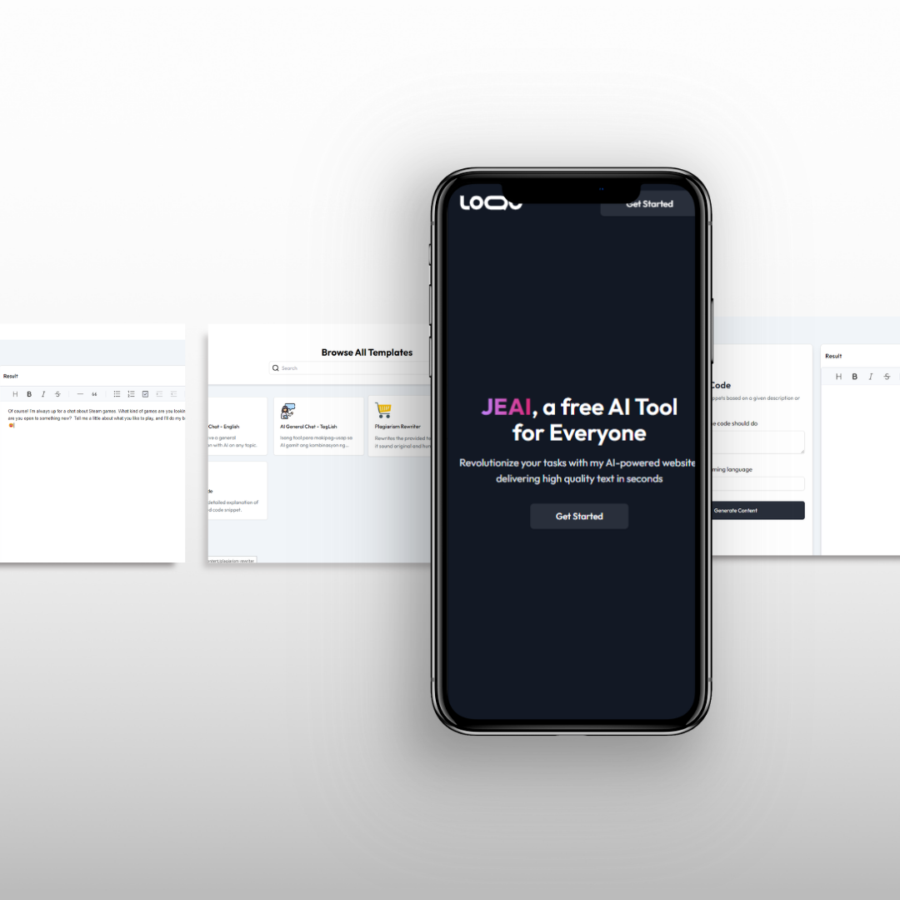
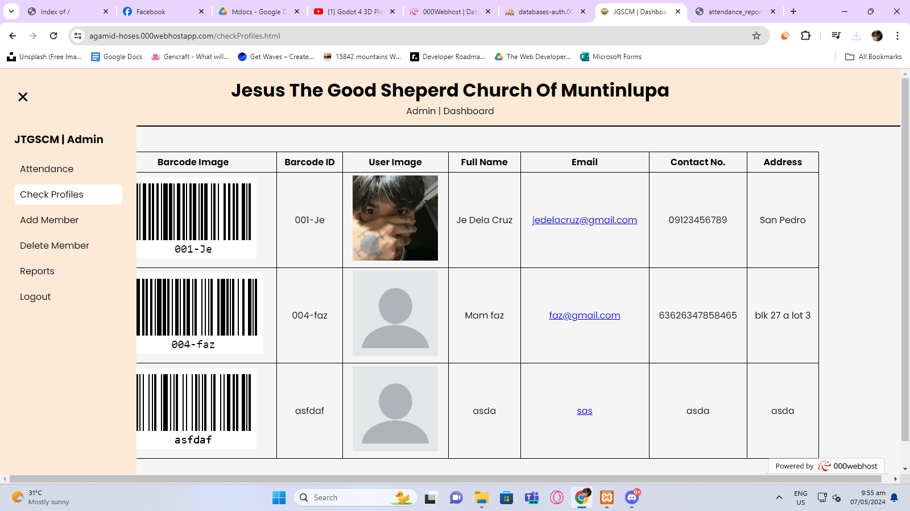
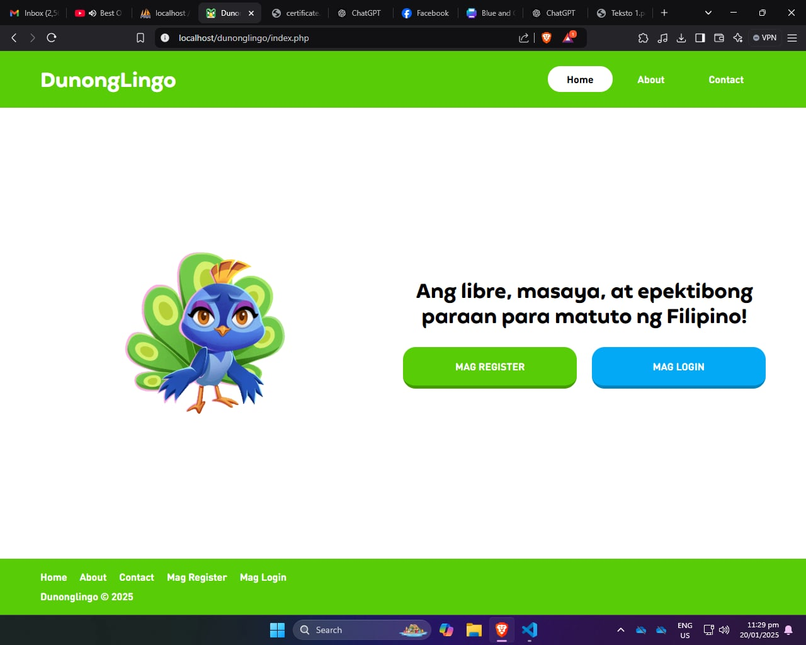
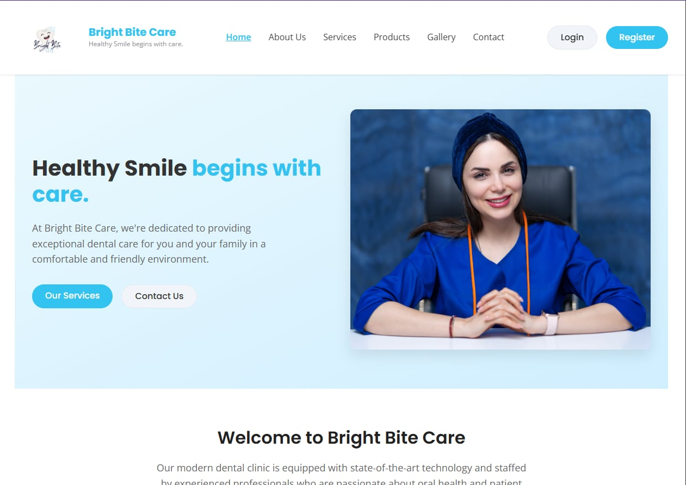

Goal: Make AI writing edits feel fast and controllable.
What I focused on: clear states (loading, errors), clean prompts, and UI that encourages iteration.
A selection of recent builds — ranging from full-stack web apps to automation and mobile-first UX. I prioritize clean UI, real-world usefulness, and maintainable code.

AI-powered text generation & editing platform built with Gemini
TypeScript
Automated barcode generation, PDF records & admin dashboard
PHP
Learning & exam platform with dynamic certificate generation
PHP
Dental clinic web app — appointments, services & bookings
PHPStart with user flow + layout, then build components for reuse.
Ship a usable baseline, then improve the experience every pass.
Edge cases, input validation, and a clean structure that scales.
Goal: Make AI writing edits feel fast and controllable.
What I focused on: clear states (loading, errors), clean prompts, and UI that encourages iteration.
Goal: Reduce manual attendance work and errors.
What I focused on: barcode generation, record export, and admin-friendly screens.